| Saving and Printing Images |
| Most browsers, including the most current, print Java applets badly. |
| The easiest way to handle this problem is to
capture the image with your machine's screen capture mechanism, paste the picture into a
graphics program, and print from there. |
- Windows: Use < ALT >< PrintScreen > and Accessories | Paint
- Mac OS 9: < Command >< Shift > 3
- Mac OS X: Use the Grab utility
|
| If you are printing, rather than just saving, you will get better results if you
use the program's
color controls (where available) to set the background to white and the foreground
to dark colors. |
| You may also find it useful to include in your capture an open
parameter window showing the settings used to create the image. |
| 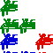 |
Enter the transformations and the starting picture. The software applies all
the transformations to the picture, producing a new picture. Iterating this process, we observe
the pictures converge to the fractal determied by the transformations. |
Deterministic IFS |
Java 1.3+ |
| 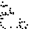 |
Enter the transformations. The software picks a starting point and applies
one of the transformations to that point. Then it applies another transformation to the
resulting point, and continues, selecting the transformations in random order. |
Random IFS |
Java 1.3+ |
| 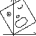 |
Enter three starting points and their images. The software computes the
affine transformation taking the starting points to the image points. |
Affine Transformation Calculator |
Flashplayer 7 |
| 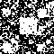 |
This is a modification of the random IFS software. Here the order of the
transformations is determined by a time series of data. Patterns in the resulting picture
detect patterns in the data. |
Driven IFS | Java 1.4+ |
| 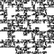 |
Instead of allowing all combinations of transformations, in this software we
can specify forbidden pairs or forbidden triples of transformations. We explore relations between
forbidden combinations and features of the resulting pictures. |
IFS with Memory |
Java 1.4+ |
|
Instead of allowing all combinations of transformations, in this software we
can specify forbidden pairs or forbidden triples of transformations. With this we can produce
less symmetric, hence more realistic, trees, ferns, and such. |
random IFS with Memory |
Java 1.3+ |
| 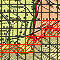 |
Select an image and cover it with boxes of various sizes. Does the
number of boxes scale as some power of the box size? |
Box Counting Dimension | Java 1.2+ |
| 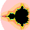 |
Draw Julia sets for points in and around the Mandelbrot set. Zoom in on regions
in these pictures. Explore the corresponding sets for functions other than z2 + c. |
Mandelbrot and Julia Sets |
Java 1.3+ |
| 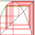 |
Explore graphical iteration, histograms, time series, return maps, bifurcation diagrams,
and Kelly plots for data generated by iterating any from a collection of functions. |
1-Dimensional Dynamics |
Java 1.3+ |
| 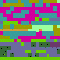 |
Enter a time series and a selection of bins. The program generates a sequence of
squares with colors assigned by the bins. This is particularly useful for detecting
periodic and nearly periodic patterns in the data. |
Kelly Plots |
Java 1.3+ |
| 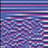 |
Couple together a collection of logistic maps, so the next iterate of each
depends on the iterates of the surrounding maps. How do the patterns depend on which neighbors
interact and how strongly they interact? |
Synchronized Oscillators |
Java 1.3+ |
| 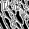 |
Select the dimension of the space, the neighborhood of each cell, and the rule specifying
which neighborhoods give rise to live cells. The software produces successive generations of patterns
developing from a specified initial pattern. |
Cellular Automata |
Java 1.1+ |
 |
Draw lines, curves, circles, and polygons. Observe how these shapes
invert across a given circle. |
Circle Inversion Illustrator |
Java 1.3+ |
| 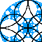 |
Input centers and radii of inverting circles. The software
generates the limit set of inversion in these circles, using the random IFS algorithm with
inversion in these circles replacing the affine transformations. |
Circle Inversion Limit Sets | Java 1.2+ |
| 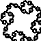 |
Input the starting string and the replacement rule. The program illustrates
the results of successive applications of the replacement rule to the string. This approach
was developed by Lindenmayer to simulate branching patterns of plants. |
L Systems | Java 1.2+ |
| 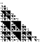 |
With this software we explore the patterns resulting from many variations of
the familiar Pascal's triangle construction. |
Pascal's triangle |
Java 1.3 |
| 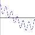 |
Enter the amplitudes and frequencies of sine waves and observe the
pattern produced by superimposing these waves. |
Spectrum Illustrator |
Flashplayer 7 |
| 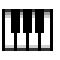 |
Compose and play fractal music. Musical phrases can be copied, shifted, dilated,
compressed, and combined to make compositions having a self-similar structure. |
Fractal Music Composer |
Java 1.3+ |
|
Draw histogtrams of the data and try to fit a normal curve. Compute the Hurst
exponent. Compute the f(alpha) curve. |
Fractal Statistics |
Java 1.3+ |
These pieces of software, running in Java 1.0, were written by Shawn Shopmyer.